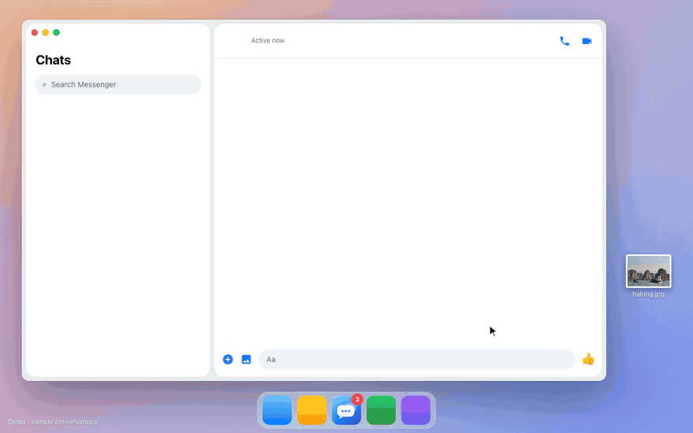

Messenger on your desktop, without the rest of Facebook.
Meta shut down the Messenger desktop app in December 2025. Natter brings back a calm window that holds your chats and nothing else.
Free. Unofficial, and not affiliated with Meta.

It does one job.
Chats only
No feed, no reels, no Facebook header. Profiles and posts open in your browser.
Voice and video calls
Natter calls in every chat, end-to-end encrypted ones included.
An unread badge you can trust
On the Dock or taskbar and in the tray, counting conversations.
Notifications on your terms
Do not disturb, hidden previews and your choice of sounds.
Themes
Follow Facebook or force System, Light, Grey, true-black Dark or High contrast, without a reload.
Stays out of the way
Lives in the menu bar or tray, opens at login, and attaches files by drag, drop or paste.
Download
Checking the latest release…
Natter
Runs on Chromium. Take this one if you make calls.
Natter Lite
Runs on your system's webview, about 10 MB. On macOS and Linux, calls in encrypted chats open in your browser.
| System | Natter | Natter Lite |
|---|
Builds aren't code-signed yet, so the first launch shows a warning. On macOS use System Settings → Privacy & Security → Open Anyway. On Windows click More info → Run anyway.
What Natter does with your account
It shows Meta's own page
Natter opens facebook.com/messages in a native window, restyles it with CSS and a small script, and passes notifications to your system. Your session stays in the app's own data folder.
It stays out of everything else
- No changes to Facebook's code
- No scraping or automation
- No reading or storing of messages
- No analytics, ads or servers of its own
Questions
Is this made by Meta?
No. Natter is an independent project, not affiliated with or endorsed by Meta.
Can my account get banned?
Natter loads the same page you'd open in a browser and automates nothing. As with any third-party app, there is no guarantee.
Which one should I pick?
Natter if you make calls. Natter Lite if you mostly text and want it tiny. They can sit side by side, each with its own sign-in.
Why sign in again and enter a PIN?
Facebook sees each install as a new device. Your Messenger PIN restores your encrypted chat history.